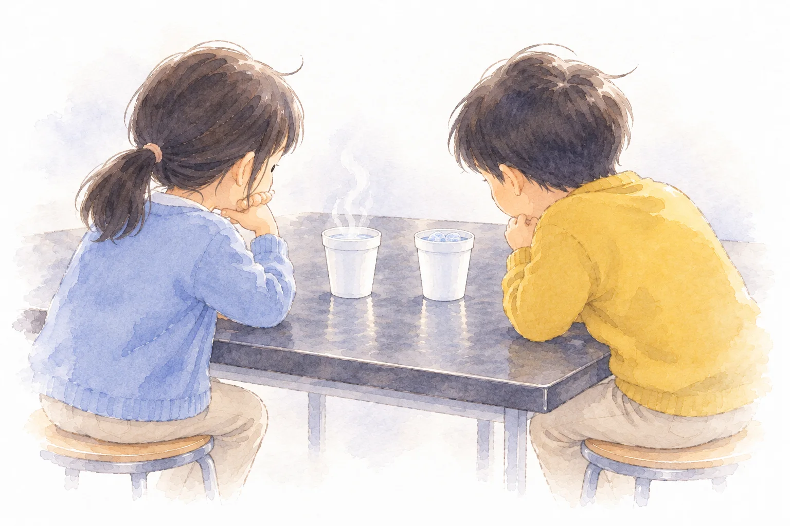

Board
板書計画
マス目プリントメーカーの板書計画で作りました。黒板の下の3つの欄は「発問と、予想される反応」です。編集用ファイルは、マス目プリントメーカーの「ひらく」で読みこむと、そのまま直せます。

第5時 第２次 水①
Lesson 05
水も、あたためたり冷やしたりすると、体積は変わるのだろうか

Lesson 5 / What about water?
Aim
学習活動・分類で意見が分かれた水を取り上げ、空気と同じ器具に水を入れた物を見て問題をつくる。
目指す児童の姿空気の結論と分類表とを関係付け、「水も、あたためたり冷やしたりすると、体積は変わるのだろうか」という問題を見いだす。
学習活動・空気の結果や前単元の学習を根拠に予想し、理由を書く。
・空気と同じ手順で計画を立てる。
目指す児童の姿空気の結果や前単元の学習と関係付け、「空気と同じで大きくなる」「水は変わらない」など、根拠のある予想を発想し、表現している。
学習活動・湯と氷水で水をあたためたり冷やしたりして、体積の変化を調べる。（実験２）
目指す児童の姿水面のわずかな動きを見逃さないように注意深く観察し、空気の記録と並べて比べられるように記録している。
指導案の着眼１の表（第２次）より。第◯次の中での時間の割りふりは案です。
On screen
この時間の問い
水も、あたためたり冷やしたりすると、体積は変わるのだろうか
問題は、子どもとつくってから映します。ふりがなは、この欄だけに付けています。
Flow
Experiment
Board
マス目プリントメーカーの板書計画で作りました。黒板の下の3つの欄は「発問と、予想される反応」です。編集用ファイルは、マス目プリントメーカーの「ひらく」で読みこむと、そのまま直せます。
Wrap up